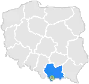
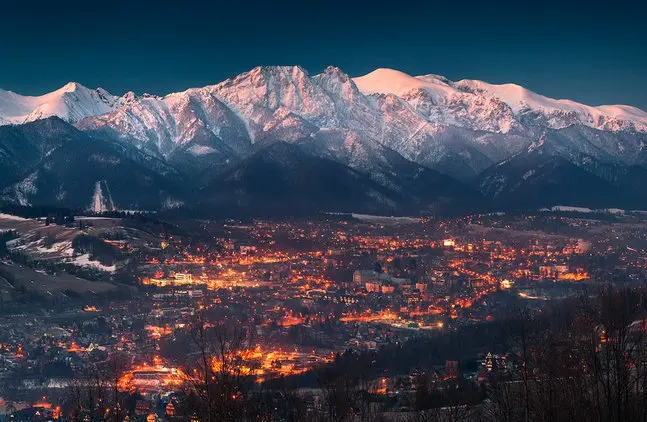
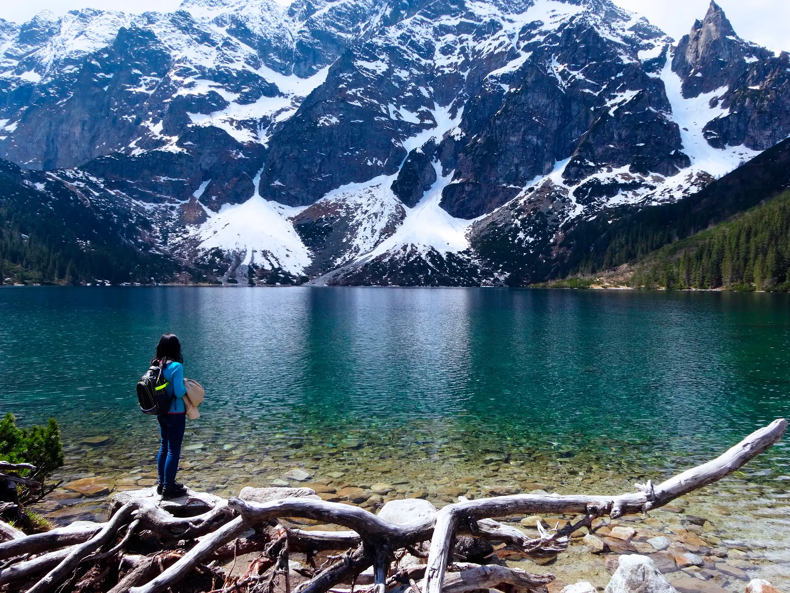
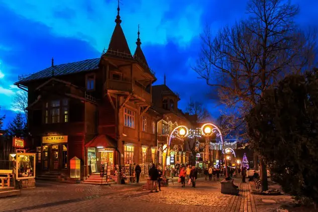
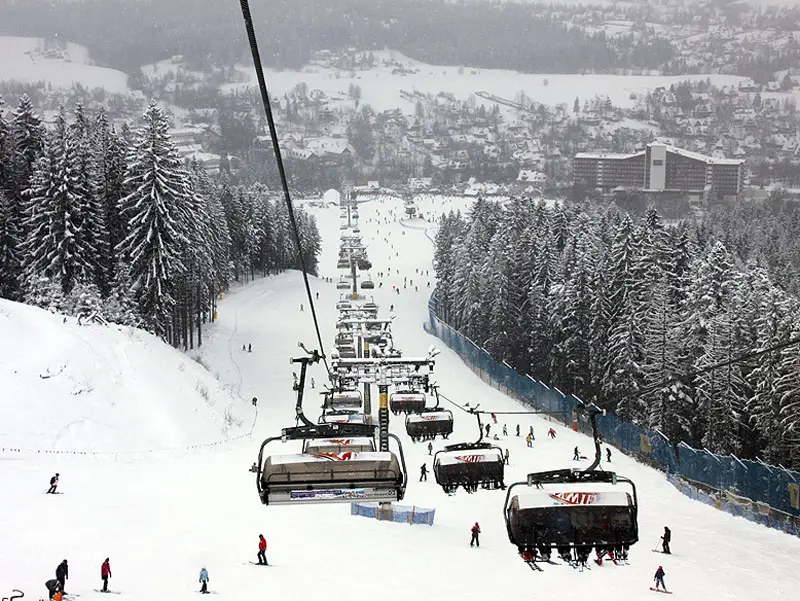

Zakopany
Zakopane to miasto w Karpatach, które znajduje się w południowej części Polski (przy granicy ze Słowacją), chcę tam pojechać, bo jest tam bardzo pięknie i przytulnie. Znajduje się w paśmie górskim zwanym Tatrami .
Zakopane słynie z piękna i wysokości, na przykład najwyższa góra w Zakopanem (Rysy) ma już 2499 metrów wysokości (na Słowacji jest część tej góry, która jest wyższa o 4 metry)! Tamtejsze góry są zbudowane z kamienia, a czasem z gliny.
● Miasto Zalopane kiedy ciemno →→
Ciekawostki
- ● W 1929 r. w Zakopanem mieszkało 15 000 mieszkańców, aw 1939 r. - ponad 20 000. Obecnie Zakopane liczy co najmniej 30 000 mieszkańców.
- ● Co roku Zakopane odwiedza około 2,5 miliona turystów
- ● W Zakopanem znajduje się największa skocznia narciarska w całej Polsce – Wielka Krokiew.
- ● Jezioro "Morskie Oko"→→
Galeria
- 
- 
- 
Jezioro "Morskie Oko" w porównaniu do człowieka ↑
Ulica Krupówli ↑
Ośrodek narciarski ↑